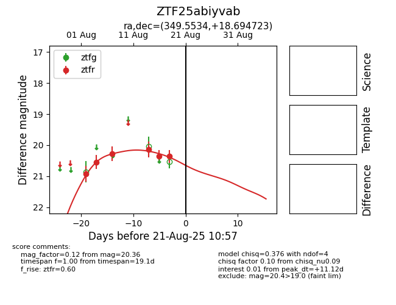

Target ZTF25abiyvab at 2025-08-21 10:57, see:
FINK: fink-portal.org/ZTF25abiyvab
Lasair: lasair-ztf.lsst.ac.uk/objects/ZTF25abiyvab
ALeRCE: alerce.online/object/ZTF25abiyvab
alt names
ZTF25abiyvab (ztf,alerce)
coordinates:
equatorial (ra, dec) = (349.5534,+18.69472)
galactic (l, b) = (94.1407,-38.90936)
photometry
last ztfr=20.36
6 ztfr detections
